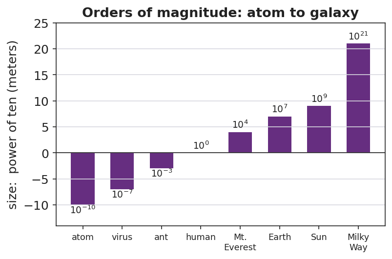

Unit: Math in Science — Lesson 03: Scientific Notation and Fermi Estimates
Phenomenon
In "Scale of the Universe" you zoom from an atom (about 10⁻¹⁰ m) all the way out to a galaxy (about 10²¹ m) — dozens of powers of ten. Then your teacher asks a number nobody could ever count directly: how many basketballs would fill this gym?

Driving Question
How do scientists write — and estimate — numbers far too big or too small to count?
Notice & Wonder
What number do you guess for the basketballs in the gym? Is it closer to a thousand, a million, or a billion? Write what you notice about the powers of ten in the zoom.
Initial Model
Write your gym guess as a normal number AND circle the power of ten you think it lives near (10³, 10⁴, 10⁵, 10⁶). You will test this guess by the end of class.
Investigate
Drag the exponent slider. The marker slides along a logarithmic "scale of the universe" axis, and the readout shows the value in both scientific notation and standard form. Notice that each step of +1 moves the marker the same distance — but multiplies the value by ten.
Scientific notation: 1.0 × 10⁰ m · Standard form: 1 m
Make It Make Sense
- Write 920,000 and 0.00045 in scientific notation.
- Which is larger: 7 × 10⁴ or 3 × 10⁵? Explain how you can tell quickly.
- A bacterium is about 10⁻⁶ m long and a person is about 10⁰ m (1 m) tall. How many orders of magnitude separate them?
Stuck? Sentence frame
"The number ___ equals ___ × 10 to the ___, so its order of magnitude is ___."
Key Vocabulary (max 3)
- scientific notation — a way to write any number as a value from 1 to 10 multiplied by a power of ten (e.g., 8.4 × 10⁴)
- order of magnitude — the power of ten a quantity is closest to; the "level" of its size (e.g., 10⁴ basketballs)
- exponent — the power that ten is raised to; it counts how many places the decimal moves and lets you compare sizes
Revise Your Model
Compare your gym answer to your Initial Model guess. Was your power of ten too high, too low, or right? Write the final answer in scientific notation and name its order of magnitude (≈ ____ basketballs, order of magnitude 10^___).
Return to the Phenomenon
State the gym answer in scientific notation and name its order of magnitude in one sentence. Target: "About 3 × 10⁴ basketballs — order of magnitude 10⁴ — tens of thousands, because the gym's volume is roughly ten thousand times a basketball's."
Exit Ticket + Closing Reflection
- (a) Write 84,000 and 0.00072 in scientific notation.
(b) Which is larger: 4 × 10⁷ or 9 × 10⁶? How do you know?
(c) Fermi: about how many grains of rice fill a coffee mug? Give your answer as a single power of ten and one sentence of reasoning. - Reflection: Fermi estimates feel uncomfortable because there's no single "right" answer. Name one way being okay with "close enough" could help you outside physics class.